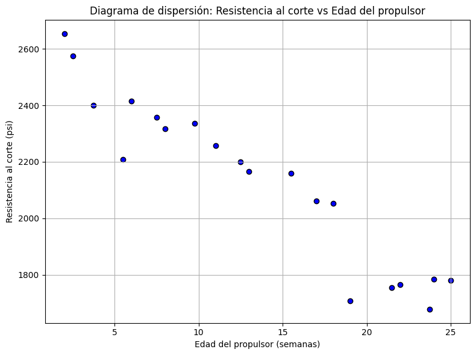

2. Regresión Lineal Simple#
2.1. Modelo de Regresión Lineal Simple#
El modelo de regresión lineal simple describe la relación entre una variable independiente \(x\) y una variable dependiente \(y\) mediante una función lineal:
\(\beta_0\) es el intercepto y \(\beta_1\) la pendiente; ambos son parámetros desconocidos.
\(\varepsilon\) representa el error aleatorio, con media cero, varianza \(\sigma^2\) desconocida, y errores no correlacionados.
Se asume que \(x\) es controlada por el analista, con error de medición despreciable, y que \(y\) es una variable aleatoria con distribución condicionada a cada valor de \(x\).
Las propiedades del modelo son:
Esto implica que la media de \(y\) es función lineal de \(x\), la varianza de \(y\) es constante e independiente de \(x\), y las respuestas son no correlacionadas debido a la independencia de los errores.
Interpretación:
\(\beta_1\) indica el cambio esperado en \(y\) ante un aumento unitario en \(x\).
\(\beta_0\) representa la media de \(y\) cuando \(x = 0\), aunque puede no tener interpretación práctica si \(x = 0\) no está en el rango observado.
2.2. Estimación por Mínimos Cuadrados#
Los parámetros \(\beta_0\) y \(\beta_1\) son desconocidos y deben estimarse a partir de datos muestrales.
Supóngase que se cuenta con \(n\) pares de datos observados: \((y_1, x_1), (y_2, x_2), \dots, (y_n, x_n)\).
Estos datos pueden provenir de un experimento controlado, un estudio observacional o registros históricos (estudio retrospectivo).
El objetivo es encontrar los valores de \(\beta_0\) y \(\beta_1\) que minimicen la suma de los cuadrados de los errores (residuos), definidos como las diferencias entre los valores observados \(y_i\) y los valores ajustados \(\hat{y}_i\) producidos por el modelo.
Este procedimiento se conoce como estimación por mínimos cuadrados.
2.3. Estimación de \(\beta_0\) y \(\beta_1\) mediante mínimos cuadrados#

Fig. 2.1 Generación de observaciones en regresión lineal: aproximación de una relación compleja.#
El método de mínimos cuadrados se utiliza para estimar los parámetros \(\beta_0\) y \(\beta_1\) del modelo de regresión lineal simple. Se busca minimizar la suma de los cuadrados de las diferencias entre las observaciones \(y_i\) y la recta ajustada.
A partir del modelo:
La suma de cuadrados a minimizar es:
Los estimadores de mínimos cuadrados \(\hat{\beta}_0\) y \(\hat{\beta}_1\) satisfacen:
Derivada parcial respecto a \(\beta_0\):
Derivada parcial respecto a \(\beta_1\):
Obtenemos el siguiente sistema de ecuaciones normales
Despejando \(\beta_{0}\) de la Ecuación (2.1) y usando la definición de la media, se obtiene \(\hat{\beta}_0 = \bar{y} - \hat{\beta}_1 \bar{x}\). Luego reemplazando \(\hat{\beta}_{0}\) en la Ecuación (2.1) obtenemos \(\hat{\beta}_{1}\) y por lo tanto, la solución de las ecuaciones normales (verifíquelo):
y
donde
Expresiones en notación compacta: (verifíquelas)
Varianza corregida de \(x\)
Covarianza entre \(x\) e \(y\)
Por lo tanto:
El modelo ajustado de regresión es:
El residuo para cada observación es:
Los residuos son fundamentales para evaluar la adecuación del modelo y detectar posibles violaciones a los supuestos, tema que se desarrolla en capítulos posteriores.
2.4. Aplicación: Datos de Propulsor de Cohete#
Este ejemplo analiza la relación entre la resistencia al corte (\(y\)) de un propulsor y la edad (\(x\)) del lote en semanas, mediante un modelo de regresión lineal simple.
Observación |
\(y_i\) (Resistencia al corte, psi) |
\(x_i\) (Edad del propulsor, semanas) |
|---|---|---|
1 |
2158.70 |
15.50 |
2 |
1678.15 |
23.75 |
3 |
2316.00 |
8.00 |
4 |
2061.30 |
17.00 |
5 |
2207.50 |
5.50 |
6 |
1708.30 |
19.00 |
7 |
1784.70 |
24.00 |
8 |
2575.00 |
2.50 |
9 |
2357.90 |
7.50 |
10 |
2256.70 |
11.00 |
11 |
2165.20 |
13.00 |
12 |
2399.55 |
3.75 |
13 |
1779.80 |
25.00 |
14 |
2336.75 |
9.75 |
15 |
1765.30 |
22.00 |
16 |
2053.50 |
18.00 |
17 |
2414.40 |
6.00 |
18 |
2200.50 |
12.50 |
19 |
2654.20 |
2.00 |
20 |
1753.70 |
21.50 |
Se propone el siguiente modelo:
Donde:
\(y\): resistencia al corte (psi)
\(x\): edad del propulsor (semanas)
\(\beta_0\), \(\beta_1\): parámetros del modelo
\(\varepsilon\): error aleatorio con \(\mathbb{E}(\varepsilon) = 0\) y varianza \(\sigma^2\)
Show code cell source
import matplotlib.pyplot as plt
ages = [
15.50, 23.75, 8.00, 17.00, 5.50, 19.00, 24.00, 2.50, 7.50, 11.00,
13.00, 3.75, 25.00, 9.75, 22.00, 18.00, 6.00, 12.50, 2.00, 21.50
]
shear_strengths = [
2158.70, 1678.15, 2316.00, 2061.30, 2207.50, 1708.30, 1784.70,
2575.00, 2357.90, 2256.70, 2165.20, 2399.55, 1779.80, 2336.75,
1765.30, 2053.50, 2414.40, 2200.50, 2654.20, 1753.70
]
plt.figure(figsize=(8, 6))
plt.scatter(ages, shear_strengths, color='blue', edgecolor='k')
plt.title('Diagrama de dispersión: Resistencia al corte vs Edad del propulsor')
plt.xlabel('Edad del propulsor (semanas)')
plt.ylabel('Resistencia al corte (psi)')
plt.grid(True)
plt.tight_layout()
plt.show()

Los datos recolectados sugieren una fuerte relación lineal negativa entre edad y resistencia. Para estimar los parámetros se calcula:
Suma de cuadrados de \(x\):
Suma de productos cruzados:
Entonces, los estimadores de mínimos cuadrados son:
Pendiente:
Intercepto (usando \(\bar{x} = 13.36\), \(\bar{y} = 2131.36\)):
El modelo ajustado es:
Interpretación:
\(\hat{\beta}_1 = -37.15\) indica que por cada semana adicional, la resistencia promedio disminuye en 37.15 psi.
\(\hat{\beta}_0 = 2627.82\) representa la resistencia esperada justo después de la fabricación (\(x = 0\)).
\(y_i\) observado |
\(\hat{y}_i\) estimado |
\(e_i\) (residuo) |
|---|---|---|
2158.70 |
2051.94 |
106.76 |
1678.15 |
1745.42 |
-67.27 |
2316.00 |
2330.59 |
-14.59 |
2061.30 |
1996.21 |
65.09 |
2207.50 |
2423.48 |
-215.98 |
1708.30 |
1921.90 |
-213.60 |
1784.70 |
1736.14 |
48.56 |
2575.00 |
2534.94 |
40.06 |
2357.90 |
2349.17 |
8.73 |
2256.70 |
2219.13 |
37.57 |
2165.20 |
2144.83 |
20.37 |
2399.55 |
2488.50 |
-88.95 |
1799.80 |
1698.98 |
80.82 |
2336.75 |
2265.58 |
71.17 |
1765.30 |
1810.44 |
-45.14 |
2053.50 |
1959.06 |
94.44 |
2414.40 |
2404.90 |
9.50 |
2200.50 |
2163.40 |
37.10 |
2654.20 |
2553.52 |
100.68 |
1753.70 |
1829.02 |
-75.32 |
2.4.1. Evaluación del modelo#
Se reportan los valores observados, ajustados y residuos. La suma total de residuos es cero, como se espera en un modelo bien especificado.
Entre las preguntas clave están:
¿Qué tan bien se ajusta el modelo a los datos?
¿Es útil para predecir nuevas observaciones?
¿Se cumplen las suposiciones de varianza constante y errores no correlacionados?
Estas preguntas se abordan mediante análisis de residuos, que se consideran aproximaciones de los errores \(\varepsilon_i\). Si los residuos parecen distribuidos aleatoriamente con varianza constante, las suposiciones del modelo son razonables.
2.4.2. Nota sobre el uso de software#
Se presentan resultados computacionales que coinciden con los cálculos manuales. La salida del algoritmo ofrece información complementaria que será discutida en secciones posteriores.
Show code cell source
import pandas as pd
import statsmodels.formula.api as smf
import statsmodels.api as sm
df = pd.DataFrame({'Edad': ages, 'Resistencia': shear_strengths})
modelo_formula = smf.ols('Resistencia ~ Edad', data=df).fit()
resumen_formula = modelo_formula.summary();
anova_formula = sm.stats.anova_lm(modelo_formula, typ=2);
resumen_formula, anova_formula
(<class 'statsmodels.iolib.summary.Summary'>
"""
OLS Regression Results
==============================================================================
Dep. Variable: Resistencia R-squared: 0.902
Model: OLS Adj. R-squared: 0.896
Method: Least Squares F-statistic: 165.4
Date: Thu, 03 Jul 2025 Prob (F-statistic): 1.64e-10
Time: 22:09:50 Log-Likelihood: -118.63
No. Observations: 20 AIC: 241.3
Df Residuals: 18 BIC: 243.3
Df Model: 1
Covariance Type: nonrobust
==============================================================================
coef std err t P>|t| [0.025 0.975]
------------------------------------------------------------------------------
Intercept 2627.8224 44.184 59.475 0.000 2534.995 2720.649
Edad -37.1536 2.889 -12.860 0.000 -43.223 -31.084
==============================================================================
Omnibus: 6.304 Durbin-Watson: 1.842
Prob(Omnibus): 0.043 Jarque-Bera (JB): 4.281
Skew: -1.109 Prob(JB): 0.118
Kurtosis: 3.464 Cond. No. 31.5
==============================================================================
Notes:
[1] Standard Errors assume that the covariance matrix of the errors is correctly specified.
""",
sum_sq df F PR(>F)
Edad 1.527483e+06 1.0 165.376758 1.643344e-10
Residual 1.662549e+05 18.0 NaN NaN)
De acuerdo con la salida anterior, se ajustó un modelo de regresión lineal simple para predecir la resistencia en función de la edad del propulsor. El modelo estimado fue:
Donde:
\(\hat{\beta}_0 = 2627.82\) (Intercepto)
\(\hat{\beta}_1 = -37.15\) (Pendiente para Edad)
Estimaciones y significancia estadística
Parámetro |
Estimación |
Error estándar |
Estadístico t |
Valor-p |
Intervalo 95% de confianza |
|---|---|---|---|---|---|
Intercepto |
2627.82 |
44.18 |
59.47 |
0.000 |
[2534.99, 2720.65] |
Edad |
-37.15 |
2.89 |
-12.86 |
0.000 |
[-43.22, -31.08] |
Interpretación:
Por cada unidad adicional de edad, la resistencia disminuye en promedio 37.15 unidades.
Ambos coeficientes son altamente significativos (\(p < 0.001\)), lo que indica evidencia estadística fuerte de una relación entre edad y resistencia.
Medidas de ajuste
Coeficiente de determinación:
\[ R^2 = 0.902 \quad \text{y} \quad R^2_{\text{ajustado}} = 0.896 \]→ El modelo explica el 90.2% de la variación total en la resistencia.
Estadístico \(F\) global:
\[ F = 165.38,\quad p < 0.0001 \]→ El modelo completo es estadísticamente significativo.
Log-verosimilitud: \(-118.63\)
Criterios de información:
AIC: 241.3
BIC: 243.3
Diagnóstico de supuestos
Durbin-Watson = 1.842
→ No se observa evidencia clara de autocorrelación en los residuos.Prueba de normalidad (Omnibus = 6.304, JB = 4.281)
\(p_{\text{Omnibus}} = 0.043\), \(p_{\text{JB}} = 0.118\)
Se sugiere una ligera desviación de la normalidad, posiblemente debido a asimetría (skew = -1.109).
Condición del número (Condition Number): 31.5
→ No hay señales fuertes de multicolinealidad.
Análisis de varianza
Fuente |
Suma de cuadrados |
Grados de libertad |
Estadístico F |
Valor-p |
|---|---|---|---|---|
Edad |
\(1.527 \times 10^6\) |
1 |
165.38 |
\(1.64 \times 10^{-10}\) |
Residual |
\(1.662 \times 10^5\) |
18 |
- |
- |
2.5. Propiedades de los Estimadores de Mínimos Cuadrados y del Modelo Ajustado#
Los estimadores de mínimos cuadrados \(\hat{\beta}_0\) y \(\hat{\beta}_1\) poseen propiedades fundamentales.
A partir de las Ecs. (2.2) y (2.3), se observa que \(\hat{\beta}_0\) y \(\hat{\beta}_1\) son combinaciones lineales de las observaciones \(y_i\). Por ejemplo, la expresión para \(\hat{\beta}_1\) es:
donde \(c_i = (x_i - \bar{x})/S_{xx}\), para \(i = 1, 2, \dots, n\).
Los estimadores de mínimos cuadrados \(\hat{\beta}_0\) y \(\hat{\beta}_1\) son insesgados para los parámetros del modelo \(\beta_0\) y \(\beta_1\).
Para demostrar que \(\hat{\beta}_1\) es insesgado, se considera:
Como \(y_i = \beta_0 + \beta_1 x_i + \varepsilon_i\), se tiene:
Sustituyendo:
Nótese que
En efecto:
Entonces, se concluye que:
Supongamos que el modelo es correcto, es decir, que \(\mathbb{E}(y_i) = \beta_0 + \beta_1 x_i\). Bajo esta suposición, \(\hat{\beta}_1\) es un estimador insesgado de \(\beta_1\).
De manera similar, se puede demostrar que \(\hat{\beta}_0\) es un estimador insesgado de \(\beta_0\) (
verfíquelo), es decir:
La varianza del estimador \(\hat{\beta}_1\) se determina como:
Dado que las observaciones \(y_i\) son no correlacionadas, la varianza de una suma equivale a la suma de las varianzas individuales:
Por tanto, la expresión para la varianza del estimador \(\hat{\beta}_1\) queda establecida como la suma ponderada de las varianzas de las \(y_i\).
La varianza de cada término en la suma está dada por \(c_i^2 \mathbb{Var}(y_i)\), y hemos supuesto que \(\mathbb{Var}(y_i) = \sigma^2\); por lo tanto:
Como \(c_i = \dfrac{x_i - \bar{x}}{S_{xx}}\), se tiene:
En consecuencia, la varianza del estimador \(\hat{\beta}_1\) está dada por:
La varianza del estimador \(\hat{\beta}_0\) es:
Como \(\bar{x}\) es constante, entonces:
\[ \mathbb{Var}(\hat{\beta}_1 \bar{x}) = \bar{x}^2 \, \mathbb{Var}(\hat{\beta}_1) \]y
\[ \mathbb{Cov}(\bar{y}, \hat{\beta}_1 \bar{x}) = \bar{x} \, \mathbb{Cov}(\bar{y}, \hat{\beta}_1) \]Se sabe que:
\[ \mathbb{Var}(\bar{y}) = \frac{\sigma^2}{n}~\text{y}~\mathbb{Cov}(\bar{y}, \hat{\beta}_1) = 0,\quad\textcolor{red}{\textsf{verifíquelo}} \]Por lo tanto, la varianza de \(\hat{\beta}_0\) es:
Un resultado fundamental acerca de la calidad de los estimadores por mínimos cuadrados \(\hat{\beta}_0\) y \(\hat{\beta}_1\) es el teorema de Gauss-Markov.
Este teorema establece que, para el modelo de regresión
\[ y_i = \beta_0 + \beta_1 x_i + \varepsilon_i \tag{2.1} \]con las siguientes condiciones:
\(\mathbb{E}(\varepsilon_i) = 0\),
\(\mathbb{Var}(\varepsilon_i) = \sigma^2\), y
errores no correlacionados,
Los estimadores por mínimos cuadrados son insesgados y presentan varianza mínima entre todos los estimadores lineales insesgados que pueden escribirse como combinaciones lineales de las observaciones \(y_i\).
En este contexto, se afirma que los estimadores por mínimos cuadrados son los mejores estimadores lineales insesgados (BLUE, por sus siglas en inglés), donde “mejores” indica que poseen la varianza más baja posible dentro de dicha clase.
En el Apéndice C.4 de [Montgomery et al., 2013] se presenta la demostración formal del teorema de Gauss-Markov, en el marco más general de la regresión lineal múltiple, siendo el modelo de regresión lineal simple un caso particular de dicha formulación.
Existen varias propiedades adicionales útiles del ajuste por mínimos cuadrados:
La suma de los residuos en cualquier modelo de regresión que incluya un intercepto \(\beta_0\) es siempre igual a cero, es decir:
\[ \sum_{i=1}^{n} (y_i - \hat{y}_i) = \sum_{i=1}^{n} e_i = 0 \]Esta propiedad se deduce directamente de la primera ecuación normal en las Ecs. (2.1) y se demuestra en Table 2.1 para los residuos. Errores de redondeo pueden afectar levemente esta suma.
La suma de los valores observados \(y_i\) es igual a la suma de los valores ajustados \(\hat{y}_i\), es decir:
\[ \sum_{i=1}^{n} y_i = \sum_{i=1}^{n} \hat{y}_i \]Table 2.1 demuestra este resultado.
La recta de regresión por mínimos cuadrados siempre pasa por el centroide de los datos, es decir, por el punto \((\bar{x}, \bar{y})\). La suma de los residuos ponderados por el valor correspondiente de la variable regresora es igual a cero, es decir:
La suma de los residuos ponderados por los valores ajustados también es igual a cero, es decir:
2.6. Estimación de \(\sigma^2\)#
Además de estimar los coeficientes \(\beta_0\) y \(\beta_1\), es necesario obtener una estimación de \(\sigma^2\) para poder realizar pruebas de hipótesis y construir intervalos de confianza dentro del modelo de regresión.
Idealmente, se desea que esta estimación no dependa de la calidad del ajuste del modelo.
Esto solo es posible si se dispone de múltiples observaciones de \(y\) para al menos un valor de \(x\) (ver Sección 4.5), o si se cuenta con información previa sobre \(\sigma^2\).
Cuando no se puede aplicar este enfoque, la estimación de \(\sigma^2\) se obtiene a partir de la suma de cuadrados de los errores o residuos:
Una fórmula computacional conveniente para \(SS_{\text{Res}}\) se obtiene sustituyendo \(\hat{y}_i = \hat{\beta}_0 + \hat{\beta}_1 x_i\) en la ecuación anterior y simplificando, lo cual da como resultado:
Pero se tiene que:
Esta expresión corresponde a la suma de cuadrados corregida de las observaciones de respuesta, por lo que se puede escribir:
La suma de cuadrados de los residuos posee \(n - 2\) grados de libertad, ya que se utilizan dos grados de libertad para estimar \(\hat{\beta}_0\) y \(\hat{\beta}_1\) al obtener \(\hat{y}_i\).
La Sección C.3 demuestra que el valor esperado de \(SS_{\text{Res}}\) es:
Por tanto, un estimador insesgado de \(\sigma^2\) es:
A esta cantidad se le denomina media cuadrática residual (\(MS_{\text{Res}}\)).
La raíz cuadrada de \(\hat{\sigma}^2\) se conoce como error estándar de regresión, y posee las mismas unidades que la variable de respuesta \(y\).
Dado que \(\hat{\sigma}^2\) depende de la suma de cuadrados de los residuos, cualquier violación en los supuestos del modelo respecto a los errores o una especificación incorrecta del modelo puede afectar de forma significativa su validez como estimador de \(\sigma^2\).
Por esta razón, \(\hat{\sigma}^2\) se considera una estimación dependiente del modelo.
2.7. Aplicación: Datos del Propulsor de Cohete#
Para estimar \(\sigma^2\) a partir de los datos del propulsor presentados en el Ejemplo 2.1, se procede inicialmente a calcular la suma total de cuadrados \(SS_T\).
Se define:
Sustituyendo los valores:
Entonces:
A partir de la ecuación (2.18), la suma de cuadrados residual se obtiene como:
Definición:
Donde:
Sustituyendo:
Por lo tanto, la estimación de \(\sigma^2\) se determina mediante la ecuación (2.19):
Definición:
Sustituyendo:
Esta estimación de \(\sigma^2\) depende del modelo asumido. Es importante señalar que este valor puede diferir levemente del reportado por Python (Tabla 2.3) debido al redondeo.
2.7.1. Forma Alternativa del Modelo#
Existe una forma alternativa del modelo de regresión lineal simple que puede resultar útil en ciertos contextos. Supongamos que redefinimos la variable regresora \(x_i\) como su desviación respecto a su media, es decir, \(x_i - \bar{x}\). El modelo de regresión entonces se reexpresa como:
Primera transformación:
Reorganizando los términos:
Definiendo un nuevo intercepto:
Obsérvese que al redefinir la variable regresora en la ecuación (2.20), se ha trasladado el origen de \(x\) desde cero hasta su media \(\bar{x}\). Para mantener iguales los valores ajustados en ambos modelos (el original y el transformado), es necesario ajustar el intercepto inicial. La relación entre los interceptos se expresa como:
Es sencillo demostrar que el estimador de mínimos cuadrados para el nuevo intercepto es:
El estimador de la pendiente \(\hat{\beta}_1\) permanece inalterado bajo esta transformación.
Esta forma alternativa del modelo presenta algunas ventajas importantes:
Los estimadores de mínimos cuadrados \(\hat{\beta}_0' = \bar{y}\) y \(\hat{\beta}_1 = \dfrac{S_{xy}}{S_{xx}}\) son no correlacionados, es decir:
Esta propiedad facilita ciertos procedimientos, como el cálculo de intervalos de confianza para la media de \(y\) (véase Sección 2.4.2).
Finalmente, el modelo ajustado se expresa como:
Aunque las ecuaciones (2.22) y (2.8) son algebraicamente equivalentes (ambas generan el mismo valor de \(\hat{y}\) para un mismo \(x\)), la ecuación (2.22) recuerda explícitamente que el modelo de regresión solo es válido dentro del rango de \(x\) observado en los datos originales. Esta región está centrada en \(\bar{x}\).
Nota: En implementaciones prácticas usando Python, esta forma del modelo puede obtenerse fácilmente centrando la variable explicativa antes de ajustar el modelo con librerías como statsmodels o scikit-learn, lo cual también facilita la interpretación del intercepto como la media de \(y\).
2.8. Pruebas de Hipótesis sobre la Pendiente e Intercepto#
Con frecuencia, se desea contrastar hipótesis y construir intervalos de confianza respecto a los parámetros del modelo.
Esta sección se enfoca en la prueba de hipótesis, mientras que la Sección 2.4 aborda la construcción de intervalos de confianza.
Estos procedimientos requieren asumir, adicionalmente, que los errores del modelo \(\varepsilon_i\) siguen una distribución normal.
Es decir, se supone que los errores son independientes y distribuidos normalmente con media cero y varianza constante \(\sigma^2\), lo que se resume como \(NID(0, \sigma^2)\).
Posteriormente, se discutirá cómo validar estas suposiciones mediante un análisis de residuos.
2.8.1. Uso de Pruebas t#
Supongamos que se desea contrastar la hipótesis de que la pendiente es igual a una constante dada, por ejemplo, \(\beta_{10}\).
Las hipótesis apropiadas son:
Dado que los errores \(\varepsilon_i \sim NID(0, \sigma^2)\), las observaciones \(y_i\) tienen distribución:
El estimador \(\hat{\beta}_1\), al ser combinación lineal de las observaciones \(y_i\), sigue:
Bajo la hipótesis nula (2.4), el estadístico:
sigue una distribución normal estándar \(N(0,1)\) si \(\sigma^2\) fuera conocida.
Sin embargo, en la práctica, \(\sigma^2\) no suele conocerse.
Ya se ha establecido que \(MS_{\text{Res}}\) es un estimador insesgado de \(\sigma^2\).
El Apéndice C.3 en [Montgomery et al., 2013] demuestra que:
Por la definición del estadístico \(t\) en la Sección C.1, se tiene:
Este estadístico sigue una distribución \(t_{n-2}\) bajo la hipótesis nula.
El procedimiento de prueba consiste en calcular \(t_0\) y compararlo con el cuantil superior \(\alpha/2\) de la distribución \(t_{n-2}\). Se rechaza \(H_0\) si:
Alternativamente, puede emplearse el enfoque basado en el valor-\(p\) para tomar decisiones inferenciales.
El denominador de \(t_0\) en la ecuación (2.9) se conoce como el error estándar estimado de la pendiente, definido como:
Por consiguiente, el estadístico \(t_0\) también puede expresarse como:
Un procedimiento análogo puede aplicarse para contrastar hipótesis sobre el intercepto.
Para evaluar:
se utiliza el estadístico:
donde:
La hipótesis nula \(H_0: \beta_0 = \beta_{00}\) se rechaza si \(|t_0| > t_{\alpha/2, \, n-2}\).
En implementaciones computacionales, como Python mediante
statsmodelsoscipy.stats, estos valores-\(t\), errores estándar y valores-\(p\) se calculan automáticamente y pueden emplearse directamente para evaluar las hipótesis del modelo.
2.9. Prueba de Significancia de la Regresión#
Un caso especial de gran relevancia de las hipótesis planteadas en la Ecuación (2.4) es:
Estas hipótesis se refieren a la significancia de la regresión.
No rechazar la hipótesis nula \(H_0: \beta_1 = 0\) implica que no existe una relación lineal entre \(x\) e \(y\).
Esta situación se ilustra en la Fig. 2.2. Puede interpretarse como:

Fig. 2.2 Situaciones en las que no se rechaza la hipótesis nula \(H_0\!: \beta_1 = 0\). Fuente [Montgomery et al., 2013]#
Por consiguiente, no rechazar \(H_0: \beta_1 = 0\) equivale a afirmar que no hay relación lineal entre \(x\) e \(y\).
Por otro lado, si se rechaza \(H_0: \beta_1 = 0\), se concluye que \(x\) contribuye a explicar la variabilidad en \(y\).
Esta conclusión se representa en la Fig. 2.3 y puede tener dos interpretaciones:

Fig. 2.3 Situaciones en las que se rechaza la hipótesis \(H_0: \beta_1 = 0\). Fuente [Montgomery et al., 2013]#
El procedimiento de prueba para \(H_0: \beta_1 = 0\) puede derivarse desde dos enfoques.
El primer enfoque utiliza directamente la estadística \(t\) definida en la Ecuación (2.12), considerando \(\beta_{10} = 0\):
La hipótesis nula \(H_0\) se rechaza si:
donde \(t_{\alpha/2,\;n-2}\) representa el valor crítico de una distribución \(t\) de Student con \(n-2\) grados de libertad al nivel de significancia \(\alpha\).
Este contraste puede implementarse fácilmente en Python mediante librerías como scipy.stats o statsmodels, que permiten calcular tanto el valor de \(t\) como el valor \(p\) asociado a la prueba.
2.9.1. Aplicación: Datos del Propulsor de Cohetes#
En este ejemplo se prueba la significancia de la regresión en el modelo del propulsor de cohetes presentado en el Ejemplo 2.1.
La estimación de la pendiente es \(\hat{\beta}_1 = -37.15\).
En el Ejemplo 2.2 se estimó la varianza como \(MS_{\text{Res}} = \hat{\sigma}^2 = 9244.59\).
El error estándar de la pendiente se calcula como:
Por tanto, el estadístico de prueba es:
Si se elige un nivel de significancia \(\alpha = 0.05\), el valor crítico correspondiente es \(t_{0.025, \, 18} = 2.101\).
Dado que \(|t_0| = 12.85 > 2.101\), se rechaza la hipótesis nula \(H_0: \beta_1 = 0\), y se concluye que existe una relación lineal entre la resistencia al corte y la antigüedad del propulsor.
2.9.2. Resultados Computacionales en Python#
El error estándar de la pendiente y el intercepto (etiquetado como “StDev” en la salida) se reportan automáticamente.
El software también proporciona el valor del estadístico \(t\) para contrastar las hipótesis \(H_0: \beta_1 = 0\) y \(H_0: \beta_0 = 0\).
Los resultados para la pendiente coinciden con los cálculos manuales realizados en este ejemplo.
Como es habitual en la mayoría de los paquetes estadísticos, Python reporta el valor-\(p\) asociado a la prueba.
Para la prueba de significancia de la regresión, se obtiene:
Esto proporciona evidencia contundente de que la resistencia está linealmente relacionada con la antigüedad del propulsor.
Para la prueba \(H_0: \beta_0 = 0\), el valor del estadístico es:
Estos resultados permiten afirmar con alta confianza que el intercepto del modelo no es igual a cero.
2.10. Análisis de la Varianza#
También puede emplearse un enfoque basado en el análisis de varianza para evaluar la significancia de la regresión.
Este análisis parte de una descomposición de la variabilidad total de la variable de respuesta \(y\). La identidad básica es:
Elevando al cuadrado ambos lados de (2.21) y sumando sobre todas las \(n\) observaciones se obtiene:
El tercer término del lado derecho puede reescribirse como:
Esto se debe a que \(\sum e_i = 0\) (ver propiedad 1, Sección 2.2.2) y \(\sum \hat{y}_i e_i = 0\) (ver propiedad 5, Sección 2.2.2). Por tanto, se cumple:
La Ecuación (2.24) es la identidad fundamental del análisis de varianza para un modelo de regresión.
El término del lado izquierdo corresponde a la suma total de cuadrados corregida, denotada \(SS_T\).
El primer término del lado derecho es la suma de cuadrados de la regresión (\(SS_R\)), también llamada suma de cuadrados del modelo.
El segundo término es la suma de cuadrados del residuo (\(SS_{Res}\)), correspondiente al error no explicado por la regresión.
Por tanto, se escribe simbólicamente:
Comparando (2.25) con la ecuación de residuos, se obtiene que:
En cuanto a los grados de libertad:
\(SS_T\) tiene \(df_T = n - 1\), pues se pierde un grado de libertad al estimar \(\bar{y}\).
\(SS_R\) tiene \(df_R = 1\), ya que depende únicamente del estimador \(\hat{\beta}_1\).
\(SS_{Res}\) posee \(df_{Res} = n - 2\), debido a la estimación de los parámetros \(\hat{\beta}_0\) y \(\hat{\beta}_1\).
Por lo tanto, se cumple:
Para probar la hipótesis:
se utiliza la estadística \(F\) definida como:
La estadística \(F_0\) sigue una distribución \(F_{1, n-2}\) bajo \(H_0\).
El Apéndice C.3 en [Montgomery et al., 2013] establece que:
\(SS_{Res} = (n - 2) MS_{Res} / \sigma^2 \sim \chi^2_{n-2}\)
\(SS_R / \sigma^2 \sim \chi^2_1\) si \(H_0\) es verdadera
\(SS_R\) y \(SS_{Res}\) son independientes
Los valores esperados de los cuadrados medios son:
Un valor grande de \(F_0\) sugiere que \(\beta_1 \ne 0\), lo que indicaría una regresión significativa.
Si \(\beta_1 \ne 0\), entonces \(F_0\) sigue una distribución \(F\) no central con parámetro:
Por lo tanto, el criterio de decisión es:
2.10.1. Tabla resumen del ANOVA para regresión#
Fuente |
Suma de cuadrados |
Grados de libertad |
Cuadrado medio |
Estadístico \(F_0\) |
|---|---|---|---|---|
Regresión |
\(SS_R = \hat{\beta}_1 S_{xy}\) |
\(1\) |
\(MS_R\) |
\(\dfrac{MS_R}{MS_{Res}}\) |
Residual |
\(SS_{Res} = SS_T - \hat{\beta}_1 S_{xy}\) |
\(n - 2\) |
\(MS_{Res}\) |
|
Total |
\(SS_T\) |
\(n - 1\) |
2.10.2. Aplicación: Datos del Propulsor de Cohetes#
En este ejemplo se prueba la significancia de la regresión en el modelo ajustado en el Ejemplo 2.1.
El modelo ajustado es \(\hat{y} = 2627.82 - 37.15x\).
Se tienen: \(SS_T = 1,\!693,\!737.60\) y \(S_{xy} = -41,\!112.65\).
La suma de cuadrados de la regresión se obtiene aplicando (2.26):
El análisis de varianza se resume en la Tabla Table 2.3.
El valor observado de la estadística \(F_0\) es \(165.21\).
Para \(\alpha = 0.01\) y grados de libertad \((1,18)\), el valor crítico es \(F_{0.01,1,18} = 8.29\).
El valor-\(p\) asociado es \(1.66 \times 10^{-10}\).
Por lo tanto, se rechaza \(H_0: \beta_1 = 0\) y se concluye que la regresión es significativa.
2.10.3. Relación con la Prueba \(t\)#
En la Sección 2.3.2 se estableció que la estadística \(t\) puede usarse para evaluar la significancia de la regresión. En particular, se tiene:
Elevando ambos lados de (2.33) al cuadrado se obtiene:
Por ejemplo, en este caso \(t_0 = -12.85\), así que \(t_0^2 = 165.12 \approx F_0 = 165.21\).
En general, el cuadrado de una variable \(t\) con \(f\) grados de libertad tiene una distribución \(F\) con \(1\) y \(f\) grados de libertad.
Aunque las pruebas \(t\) y \(F\) son equivalentes en regresión lineal simple, la prueba \(t\) es más versátil, ya que permite hipótesis alternativas unilaterales (\(\beta_1 < 0\) o \(\beta_1 > 0\)), mientras que la prueba \(F\) solo evalúa alternativas bilaterales.
2.10.4. Tabla de análisis de varianza#
Fuente |
Suma de cuadrados |
Grados de libertad |
Cuadrado medio |
Estadístico \(F_0\) |
Valor-\(p\) |
|---|---|---|---|---|---|
Regresión |
\(1,\!527,\!334.95\) |
\(1\) |
\(1,\!527,\!334.95\) |
\(165.21\) |
\(1.66 \times 10^{-10}\) |
Residual |
\(166,\!402.65\) |
\(18\) |
\(9,\!244.59\) |
||
Total |
\(1,\!693,\!737.60\) |
\(19\) |
2.10.5. Ejemplo: Datos del Propulsor de Cohetes#
Se evaluará la significancia de la regresión en el modelo ajustado del Ejemplo 2.1 correspondiente a los datos del propulsor de cohete. El modelo estimado es:
Se conocen los siguientes valores:
\(SST = 1,693,737.60\)
\(S_{xy} = -41,112.65\)
La suma de cuadrados de regresión se calcula usando la ecuación (2.35):
La prueba de hipótesis para la significancia de la regresión se resume en la Tabla 2.5. El valor calculado de la estadística F es \(F_0 = 165.21\) {eq}, y el valor crítico correspondiente de la distribución F, con \( \alpha = 0.01 \), 1 y 18 grados de libertad, es \(F_{0.01, 1, 18} = 8.29\).
El valor-p asociado es \(p = 1.66 \times 10^{-10}\).
Dado que \(F_0 > F_{0.01, 1, 18}\) y el valor-p es extremadamente pequeño, se rechaza la hipótesis nula:
Resultados en Python: El análisis de varianza implementado en Python produce resultados consistentes con los cálculos manuales. La ligera diferencia observada entre los valores obtenidos manualmente y los generados por software se debe al redondeo a dos decimales en los cálculos manuales. Sin embargo, las estadísticas de prueba concuerdan esencialmente. Se evaluará la significancia de la regresión en el modelo ajustado del Ejemplo 2.1 correspondiente a los datos del propulsor de cohete. El modelo estimado es:
Se conocen los siguientes valores:
\(SST = 1,693,737.60\)
\(S_{xy} = -41,112.65\)
La suma de cuadrados de regresión se calcula usando la ecuación (2.36):
La prueba de hipótesis para la significancia de la regresión se resume en la Tabla 2.5. El valor calculado de la estadística F es \(F_0 = 165.21\), y el valor crítico correspondiente de la distribución F, con \( \alpha = 0.01 \), 1 y 18 grados de libertad, es \(F_{0.01, 1, 18} = 8.29\).
El valor-p asociado es \(p = 1.66 \times 10^{-10}\).
Dado que \(F_0 > F_{0.01, 1, 18}\) y el valor-p es extremadamente pequeño, se rechaza la hipótesis nula:
Resultados en Python: El análisis de varianza implementado en Python produce resultados consistentes con los cálculos manuales. La ligera diferencia observada entre los valores obtenidos manualmente y los generados por software se debe al redondeo a dos decimales en los cálculos manuales. Sin embargo, las estadísticas de prueba concuerdan esencialmente.
2.10.6. Profundización en la Prueba t#
En la Sección 2.3.2 se introdujo la estadística t para evaluar la significancia de la regresión, definida como:
Elevando al cuadrado ambos lados de la ecuación anterior, se obtiene:
Por lo tanto, \(t_0^2\) es idéntico al valor \(F_0\) obtenido mediante el análisis de varianza. En el ejemplo del propulsor, se tiene:
\(t_0 = -12.5\)
\(t_0^2 = (-12.5)^2 = 156.25 \approx F_0 = 165.21\)
En general, el cuadrado de una variable aleatoria t con \(f\) grados de libertad sigue una distribución F con 1 y \(f\) grados de libertad en el numerador y denominador, respectivamente.
Aunque la prueba t para \(H_0: \beta_1 = 0\) es equivalente a la prueba F en regresión lineal simple, la t es más flexible, ya que permite hipótesis alternativas unilaterales como \(H_1: \beta_1 < 0\) o \(H_1: \beta_1 > 0\). Por el contrario, la prueba F considera únicamente hipótesis bilaterales.
2.10.7. Tabla de Análisis de Varianza para el Modelo de Regresión del Propulsor#
Fuente de variación |
Suma de Cuadrados |
Grados de Libertad |
Cuadrado Medio |
\(F_0\) |
Valor-p |
|---|---|---|---|---|---|
Regresión |
1,527,334.95 |
1 |
1,527,334.95 |
165.21 |
\(1.66 \times 10^{-10}\) |
Residual |
166,402.65 |
18 |
9,244.59 |
||
Total |
1,693,737.60 |
19 |
Los programas de cómputo, como Python, reportan tanto la tabla de análisis de varianza como la estadística t.
El verdadero valor del análisis de varianza se manifiesta en modelos de regresión múltiple, que serán abordados en el siguiente capítulo.
Es fundamental tener en cuenta que la conclusión \(\beta_1 = 0\) es estadísticamente significativa únicamente con base en estas pruebas. La incapacidad para demostrar que la pendiente es distinta de cero no implica necesariamente que no exista relación entre \(y\) y \(x\). Podría ser consecuencia de:
varianza elevada en el proceso de medición,
un rango de valores de \(x\) no adecuado,
o limitaciones en el diseño del experimento.
En definitiva, se requiere evidencia no estadística y conocimiento profundo del dominio para concluir que \(\beta_1 = 0\).
2.11. Estimación por Intervalos en Regresión Lineal Simple#
En esta sección se estudia la estimación por intervalos de confianza para los parámetros del modelo de regresión. También se aborda la construcción de intervalos para la respuesta media \(\mathbb{E}(y)\) dada una entrada \(x\). Se mantienen las suposiciones de normalidad introducidas en la Sección 2.3.
2.11.1. Intervalos de Confianza para \(\beta_0\), \(\beta_1\) y \(\sigma^2\)#
Además de los estimadores puntuales de \(β_0\), \(β_1\) y \(σ^2\), también es posible obtener intervalos de confianza para estos parámetros.
La amplitud de estos intervalos proporciona una medida de la calidad global de la recta de regresión.
Si los errores están distribuidos normalmente e independientemente, entonces la distribución muestral de ambos cocientes $\((\hat{β}_1 - β_1)/se(\hat{β}_1) \quad \text{y} \quad (\hat{β}_0 - β_0)/se(\hat{β}_0)\)\( sigue una distribución \)t\( con \)n - 2$ grados de libertad.
Por lo tanto, un intervalo de confianza del \(100(1 - α)\%\) para la pendiente \(β_1\) está dado por:
Asimismo, un intervalo de confianza del \(100(1 - α)\%\) para la ordenada al origen \(β_0\) es:
Estos intervalos tienen la interpretación frecuentista clásica.
Es decir, si se tomaran múltiples muestras del mismo tamaño y en los mismos niveles de \(x\), y se construyeran intervalos del 95% para la pendiente en cada caso, entonces aproximadamente el 95% de ellos contendrían el valor verdadero de \(β_1\).
Bajo el supuesto de errores normales e independientes, el Apéndice C.3 en [Montgomery et al., 2013] demuestra que la distribución muestral de \((n - 2) \cdot \text{MSRes}/σ^2\) sigue una distribución \(\chi^2\) con \(n - 2\) grados de libertad. Por tanto:
En consecuencia, un intervalo de confianza del \(100(1 - α)\%\) para \(σ^2\) está dado por:
2.11.2. Ejemplo: Datos del Propulsor de Cohete#
Construimos intervalos de confianza del 95% para \(β_1\) y \(σ^2\) a partir de los datos del ejemplo 2.1.
El error estándar de \(\hat{β}_1\) es \(se(\hat{β}_1) = 2.89\) y \(t_{0.025,18} = 2.101\). Entonces, usando la ecuación (2.39):
Lo que resulta en:
Esto significa que el 95% de los intervalos construidos de esta manera incluirán el valor verdadero de la pendiente.
Si se selecciona un valor diferente de \(α\), la amplitud del intervalo cambia. Por ejemplo:
Intervalo del 90%: \(-42.16 \leq β_1 \leq -32.14\) (más estrecho).
Intervalo del 99%: \(-45.49 \leq β_1 \leq -28.81\) (más amplio).
En general, a mayor nivel de confianza \((1 - α)\), mayor es la amplitud del intervalo.
Para encontrar el intervalo del 95% para \(σ^2\), usamos la ecuación (2.42):
De la Tabla A.2, se obtiene que \(\chi^2_{0.025,18} = 31.5\) y \(\chi^2_{0.975,18} = 8.23\). Entonces:
Finalmente, el intervalo de confianza queda como:
Este procedimiento puede reproducirse en Python utilizando bibliotecas como
scipy.statspara obtener los valores críticos \(t\) y \(\chi^2\), y calcular manualmente los intervalos mediante fórmulas como las que se han descrito.
2.12. Estimación por Intervalos de la Respuesta Media#
Una de las aplicaciones más importantes de un modelo de regresión es la estimación del valor esperado \(\mathbb{E}(y)\) para un valor específico de la variable regresora \(x\).
Por ejemplo, podríamos querer estimar la resistencia media al corte del adhesivo propulsor en un motor de cohete fabricado con una partida de propulsor con 10 semanas de antigüedad.
Sea \(x_0\) el valor de la variable regresora para el cual se desea estimar la respuesta media, es decir, \(\mathbb{E}(y|x_0)\).
Se asume que \(x_0\) se encuentra dentro del rango de los valores de \(x\) usados en la estimación del modelo.
Un estimador insesgado de \(\mathbb{E}(y|x_0)\) se obtiene a partir del modelo ajustado como:
Para construir un intervalo de confianza del \(100(1 - \alpha)\%\) para \(\mathbb{E}(y|x_0)\), se observa primero que \(\hat{\mu}_{y|x_0}\) es una variable aleatoria normalmente distribuida, ya que es una combinación lineal de las observaciones \(y_i\).
La varianza de \(\hat{\mu}_{y|x_0}\) es:
Esto se deduce porque, como se mencionó en la Sección 2.2.4, \(\operatorname{Cov}(\bar{y}, \hat{\beta}_1) = 0\).
Por tanto, la distribución muestral de
\[ \frac{\hat{\mu}_{y|x_0} - \mathbb{E}(y|x_0)}{\sqrt{\operatorname{MS}_{\text{Res}} \left( \frac{1}{n} + \frac{(x_0 - \bar{x})^2}{S_{xx}} \right)}} \]es una \(t\) de Student con \(n - 2\) grados de libertad.
En consecuencia, el intervalo de confianza del \(100(1 - \alpha)\%\) para la respuesta media en el punto \(x = x_0\) es:
Es importante notar que el ancho del intervalo depende del valor de \(x_0\).
Este ancho es mínimo cuando \(x_0 = \bar{x}\) y se incrementa a medida que \(|x_0 - \bar{x}|\) aumenta.
Esta observación es intuitiva, ya que nuestras estimaciones son más precisas en valores de \(x\) cercanos al centro de los datos.
2.12.1. Ejemplo: Datos del Propulsor de Cohete#
Se desea obtener un intervalo de confianza del 95% para \(\mathbb{E}(y|x_0)\) usando los datos del propulsor del Ejemplo 2.1.
A partir de la ecuación (2.45), se obtiene:
Por ejemplo, si \(x_0 = \bar{x} = 13.3625\), entonces \(\hat{\mu}_{y|x_0} = 2131.40\) y el intervalo de confianza se convierte en:
La siguiente tabla muestra los límites de confianza del 95% para diferentes valores de \(x_0\), y la Figura 2.4 los representa gráficamente.
Se observa que el ancho del intervalo se incrementa con el valor absoluto de \(x_0 - \bar{x}\).
2.12.2. Tabla: Límites de Confianza del 95% para \(\mathbb{E}(y|x_0)\)#
\(x_0\) |
Límite Inferior |
Límite Superior |
|---|---|---|
3 |
2438.919 |
2593.821 |
6 |
2341.360 |
2468.481 |
9 |
2241.104 |
2345.836 |
12 |
2136.098 |
2227.942 |
13.3625 |
2086.230 |
2176.571 |
15 |
2024.318 |
2116.822 |
18 |
1905.890 |
2012.351 |
21 |
1782.928 |
1912.412 |
24 |
1657.395 |
1815.045 |
Aunque muchos textos advierten evitar la extrapolación más allá del rango de los datos, la ecuación (2.45) muestra que el problema es gradual y no abrupto.
Extrapolar implica usar la ecuación de predicción fuera del dominio observado de \(x\), donde la varianza de \(\mathbb{E}(y|x_0)\) aumenta conforme \(x_0\) se aleja del centro de los datos.
Esto no significa que la predicción se vuelva inválida de inmediato, pero sí que su precisión se deteriora progresivamente.
La extrapolación moderada es común y está justificada, pero la lejana conlleva mayor riesgo de error del modelo o de la ecuación.
La validez del intervalo de confianza en (2.45) aplica solo para un único intervalo.
Para múltiples intervalos simultáneos se requiere inferencia estadística conjunta, tema tratado en el Capítulo 3.
2.13. Predicción de Nuevas Observaciones#
Una aplicación esencial del modelo de regresión es la predicción de nuevas observaciones \(y\) para un valor específico de la variable regresora \(x\).
Sea \(x_0\) el valor de interés. Entonces, el estimador puntual de la futura observación \(y_0\) es:
Ahora se desea construir un intervalo de predicción para la futura observación \(y_0\).
El intervalo de confianza para la media en \(x = x_0\) (ver (2.45)) no es apropiado aquí, ya que estima el parámetro \(\mathbb{E}(y|x_0)\) y no hace una afirmación probabilística sobre observaciones futuras individuales.
Para ello, se define la variable aleatoria:
Esta variable tiene distribución normal con media cero y varianza:
Esto se debe a que \(y_0\) y \(\hat{y}_0\) son independientes.
El error estándar de \(\psi\) es el estadístico adecuado sobre el cual basar el intervalo de predicción.
Así, el intervalo de predicción del \(100(1 - \alpha)\%\) para una observación futura en \(x_0\) es:
Este intervalo es más estrecho cuando \(x_0 = \bar{x}\) y se amplía a medida que \(|x_0 - \bar{x}|\) aumenta.
Comparando (2.50) con (2.45), se observa que el intervalo de predicción es siempre más ancho, ya que incorpora tanto la variabilidad del modelo como la de nuevas observaciones.
2.13.1. Ejemplo: Datos del Propulsor de Cohete#
Se desea obtener un intervalo de predicción del 95% para la resistencia al corte de un nuevo motor fabricado con propulsor de 10 semanas de antigüedad.
Usando la ecuación (2.50), se obtiene:
Con \(\hat{y}_0 = 2256.32\), se calcula:
Esto indica que un nuevo motor fabricado con propulsor de 10 semanas podría tener una resistencia al corte entre 2048.32 y 2464.32 psi.
La Figura 2.5 (generada en Python) muestra gráficamente el intervalo de predicción del 95% y el intervalo de confianza para la media, ilustrando cómo el primero es más amplio que el segundo.
Generalización del Intervalo de Predicción para \(m\) Observaciones Futuras
Se puede extender la ecuación (2.50) para estimar la media de \(m\) futuras observaciones en \(x = x_0\).
Sea \(\bar{y}_0\) la media de \(m\) futuras observaciones. El estimador puntual es:
Entonces, el intervalo de predicción del \(100(1 - \alpha)\%\) para \(\bar{y}_0\) es:
2.14. Coeficiente de Determinación#
El coeficiente de determinación se define como:
\(\text{SST}\) mide la variabilidad total en \(y\) sin considerar a \(x\).
\(\text{SS}_{\text{Res}}\) mide la variabilidad restante en \(y\) después de ajustar por \(x\).
Por tanto, \(R^2\) representa la proporción de variabilidad explicada por la variable regresora \(x\).
Como \(0 \leq \text{SS}_{\text{Res}} \leq \text{SST}\), se tiene que \(0 \leq R^2 \leq 1\).
Valores cercanos a 1 indican que gran parte de la variabilidad en \(y\) es explicada por el modelo de regresión.
Para el modelo ajustado a los datos del propulsor de cohete (Ejemplo 2.1), se obtiene:
Esto indica que el 90.18% de la variación en la resistencia está explicada por el modelo.
2.14.1. Precauciones al Interpretar \(R^2\)#
El estadístico \(R^2\) debe interpretarse con cautela, ya que puede inflarse artificialmente al agregar más términos al modelo.
Por ejemplo, si no hay repeticiones en los valores de \(x\), un polinomio de grado \(n - 1\) ajustará perfectamente los \(n\) datos, resultando en \(R^2 = 1\).
Si hay valores repetidos en \(x\), entonces \(R^2 < 1\), ya que el modelo no puede explicar el error puro.
Incluir más variables en el modelo no garantiza una mejora.
Aunque \(R^2\) nunca disminuye al agregar una variable regresora, esto no implica que el nuevo modelo sea mejor.
Si la suma de cuadrados del error no disminuye lo suficiente, el cuadrado medio del error puede aumentar debido a la pérdida de grados de libertad.
2.14.2. Influencia del Rango de \(x\)#
La magnitud de \(R^2\) también depende del rango de variabilidad de la variable \(x\).
En general, \(R^2\) aumenta cuando la dispersión de los valores de \(x\) es mayor, y disminuye cuando esta es menor (si el modelo está correctamente especificado).
Usando el método delta (ver Hahn, 1973), se puede mostrar que el valor esperado de \(R^2\) en regresión lineal simple es aproximadamente:
Esto muestra que \(\mathbb{E}(R^2)\) aumenta (o disminuye) a medida que \(S_{xx}\) aumenta (o disminuye).
Un valor alto de \(R^2\) puede deberse simplemente a un rango muy amplio en \(x\).
Un valor bajo puede deberse a que el rango de \(x\) es demasiado estrecho para detectar la relación con \(y\).
2.14.3. Conceptos Erróneos sobre \(R^2\)#
\(R^2\) no indica la magnitud de la pendiente de la recta de regresión. Un valor grande de \(R^2\) no implica una pendiente pronunciada.
\(R^2\) no mide la validez del modelo lineal. Puede ser alto incluso si \(x\) y \(y\) se relacionan de forma no lineal.
Por ejemplo, en la Figura 2.3b, \(R^2\) es relativamente alto, aunque la aproximación lineal es deficiente.
Un valor grande de \(R^2\) no implica necesariamente que el modelo sea un predictor preciso.
2.15. Estimación por Máxima Verosimilitud#
El método de mínimos cuadrados permite estimar los parámetros en un modelo de regresión lineal sin necesidad de asumir una distribución específica para los errores \(\varepsilon\). Produce estimadores lineales insesgados óptimos para \(\beta_0\) y \(\beta_1\). No obstante, procedimientos como pruebas de hipótesis e intervalos de confianza requieren asumir que los errores se distribuyen normalmente. Si se conoce la distribución de los errores, una alternativa es el método de máxima verosimilitud.
Supongamos los datos \((y_i, x_i)\) para \(i = 1, 2, \dots, n\).
Si se asume que los errores del modelo de regresión son NID\((0, \sigma^2)\), entonces las observaciones \(y_i\) son variables aleatorias independientes con distribución normal, media \(\beta_0 + \beta_1 x_i\) y varianza \(\sigma^2\).
La función de verosimilitud se construye a partir de la distribución conjunta de las observaciones. Si consideramos que los datos están fijos y los parámetros \(\beta_0\), \(\beta_1\) y \(\sigma^2\) son desconocidos, la función de verosimilitud está dada por:
Los estimadores de máxima verosimilitud son los valores de los parámetros \(\beta_0\), \(\beta_1\) y \(\sigma^2\) que maximizan \(L\), o equivalente, \(\ln L\):
Los estimadores de máxima verosimilitud \(\tilde{\beta}_0\), \(\tilde{\beta}_1\), y \(\tilde{\sigma}^2\) satisfacen las siguientes condiciones:
La solución de estas ecuaciones da los estimadores de máxima verosimilitud:
Obsérvese que los estimadores \(\tilde{\beta}_0\) y \(\tilde{\beta}_1\) coinciden con los de mínimos cuadrados.
El estimador \(\tilde{\sigma}^2\) es sesgado, y se relaciona con el estimador insesgado \(\hat{\sigma}^2\) mediante:
Este sesgo es pequeño si \(n\) es moderadamente grande, por lo que generalmente se utiliza \(\hat{\sigma}^2\).
2.15.1. Propiedades de los Estimadores por Máxima Verosimilitud#
En general, los estimadores de máxima verosimilitud presentan mejores propiedades estadísticas que los de mínimos cuadrados:
Son insesgados (o asintóticamente insesgados en el caso de \(\tilde{\sigma}^2\)).
Tienen varianza mínima entre todos los estimadores insesgados.
Son consistentes (se acercan al verdadero valor del parámetro conforme \(n \to \infty\)).
Son estadísticos suficientes (capturan toda la información relevante de la muestra).
Sin embargo, su uso requiere suposiciones más estrictas que los estimadores por mínimos cuadrados.
Mínimos cuadrados solo requiere supuestos sobre momentos de segundo orden (esperanza, varianza, covarianza).
Máxima verosimilitud necesita una suposición completa de la distribución, en este caso normalidad.
Para una discusión detallada sobre estimación por máxima verosimilitud en regresión, véase Graybill (1961, 1976), Myers (1990), Searle (1971) y Seber (1977).
2.16. Caso en que el regresor \(x\) es aleatorio#
El modelo de regresión lineal presentado en este capítulo asume que los valores de la variable regresora \(x\) son constantes conocidas. Esta suposición implica que los coeficientes de confianza y los errores tipo I (o tipo II) se interpretan en el contexto de muestreo repetido sobre \(y\), manteniendo constantes los niveles de \(x\).
Sin embargo, existen numerosas situaciones en las que esta hipótesis no es apropiada.
Por ejemplo, en los datos sobre el tiempo de entrega de bebidas gaseosas del Capítulo 1 (véase la Figura 1.1), los puntos de venta que visita la persona encargada de la distribución se seleccionan aleatoriamente.
En este caso, no es realista suponer que el volumen de entrega \(x\) puede ser controlado, por lo tanto, resulta más adecuado considerar que tanto \(x\) como \(y\) son variables aleatorias.
Afortunadamente, bajo ciertas condiciones, todos los resultados previos sobre estimación de parámetros, pruebas de hipótesis y predicción siguen siendo válidos. A continuación se exponen dichas condiciones.
2.16.1. \(x\) e \(y\) distribuidos conjuntamente#
Supongamos que \(x\) e \(y\) son variables aleatorias con una distribución conjunta, aunque se desconoce su forma funcional. Se puede demostrar que los resultados previos de regresión se mantienen válidos si se cumplen las siguientes condiciones:
La distribución condicional de \(y\) dado \(x\) es normal, con media condicional \(\mathbb{E}(y|x) = \beta_0 + \beta_1 x\) y varianza condicional \(\mathbb{Var}(y|x) = \sigma^2\).
Los valores de \(x\) son variables aleatorias independientes, cuya distribución no depende de \(\beta_0\), \(\beta_1\) ni \(\sigma^2\).
Cuando estas condiciones se satisfacen, los procedimientos de regresión permanecen inalterados. No obstante, los coeficientes de confianza y los errores estadísticos adquieren una interpretación distinta:
En este contexto, se refieren al muestreo repetido de pares \((x_i, y_i)\) y no al muestreo repetido de \(y_i\) con niveles fijos de \(x_i\).
2.17. Distribución conjunta normal de \(x\) e \(y\): Modelo de correlación#
Supongamos ahora que \(y\) y \(x\) están distribuidos conjuntamente según una distribución normal bivariada. Es decir, la función de densidad conjunta está dada por:
donde:
\(\mu_1\), \(\sigma_1^2\): media y varianza de \(y\)
\(\mu_2\), \(\sigma_2^2\): media y varianza de \(x\)
\(\sigma_{12} = \mathbb{Cov}(y, x)\)
\(\rho = \dfrac{\sigma_{12}}{\sigma_1 \sigma_2}\) es el coeficiente de correlación entre \(y\) y \(x\)
La distribución condicional de \(y\) dado un valor de \(x\) está dada por:
donde:
\(\beta_0 = \mu_1 - \rho \dfrac{\sigma_1}{\sigma_2} \mu_2\)
\(\beta_1 = \rho \dfrac{\sigma_1}{\sigma_2}\)
\(\sigma_{1.2}^2 = \sigma_1^2 (1 - \rho^2)\)
Es decir, la distribución condicional de \(y\) dado \(x\) es normal con media condicional
y varianza condicional constante \(\sigma_{1.2}^2\).
Existe una relación directa entre el coeficiente de correlación \(\rho\) y la pendiente \(\beta_1\): si \(\rho = 0\), entonces \(\beta_1 = 0\), lo cual implica que no existe relación lineal entre \(y\) y \(x\).
2.17.1. Estimación de los parámetros por máxima verosimilitud#
Los estimadores de máxima verosimilitud de \(\beta_0\) y \(\beta_1\) son:
Estos estimadores coinciden con los obtenidos mediante mínimos cuadrados cuando \(x\) se considera una variable controlada. Como \(y\) dado \(x\) sigue una distribución normal con media \(\beta_0 + \beta_1 x\) y varianza constante, todos los resultados desarrollados previamente para el modelo con \(x\) fijo siguen siendo válidos.
2.17.2. Inferencia sobre el coeficiente de correlación \(\rho\)#
El estimador de \(\rho\) es el coeficiente de correlación muestral:
De la ecuación anterior se deduce que:
Por tanto, \(\hat{\beta}_1\) y \(r\) están estrechamente relacionados: \(r\) mide la asociación lineal entre \(y\) y \(x\), mientras que \(\hat{\beta}_1\) cuantifica el cambio esperado en \(y\) ante una variación unitaria en \(x\).
Se puede expresar también que:
Es decir, el coeficiente de determinación \(R^2\) es simplemente el cuadrado del coeficiente de correlación entre \(y\) y \(x\).
Aunque regresión y correlación están relacionadas, la regresión permite desarrollar modelos cuantitativos útiles para predicción, mientras que la correlación solo mide asociación.
2.17.3. Prueba de hipótesis para el coeficiente de correlación#
Para probar \(H_0: \rho = 0\) contra \(H_1: \rho \ne 0\), el estadístico de prueba es:
Este estadístico sigue una distribución \(t\) con \(n - 2\) grados de libertad bajo \(H_0\). Rechazamos \(H_0\) si \(|t_0| > t_{\alpha/2, n-2}\). Esta prueba es equivalente a la de \(H_0: \beta_1 = 0\) discutida en (2.4).
2.17.4. Prueba para \(H_0: \rho = \rho_0\) con \(\rho_0 \ne 0\)#
Para muestras moderadamente grandes (\(n \geq 25\)), se aplica la transformación de Fisher:
Donde \(\mu_Z = \text{arctanh}(\rho)\) y \(\sigma_Z^2 = \frac{1}{n - 3}\). Por tanto, para probar \(H_0: \rho = \rho_0\), se utiliza:
Se rechaza \(H_0\) si \(|Z_0| > Z_{\alpha/2}\).
El intervalo de confianza del \(100(1 - \alpha)\%\) para \(\rho\) es:
donde \(\tanh(u) = \dfrac{e^u - e^{-u}}{e^u + e^{-u}}\).